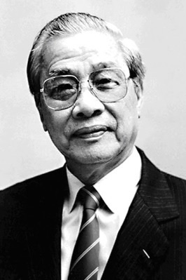

Ông Võ Văn Kiệt tên thật là Phan Văn Hòa, là con út trong một gia đình nông dân không ruộng đất ở xã Trung Hiệp, huyện Vũng Liêm tỉnh Vĩnh Long. Ở quê, ông thường được gọi là Chín Hòa, theo cách gọi của Nam Bộ. Ở ấp Bình Phụng làng Trung Lương (nay là xã trung Hiệp) ai cũng biết ông Phan Văn Dựa và bà Võ Thị Quế là gia đình nghèo, không ruộng đất, không có cả đất thổ cư, chỉ có đôi bàn tay lao động làm mướn, hoặc mướn ruộng để làm. Nhà có 8 người con, 6 trai, 2 gái. Năm 1922, hạn hán mất mùa, người làm mướn nhiều, người thuê mướn thì ít, cuộc sống gia đình ông Phan Văn Dựa càng khốn khó. Một người bà con xa đẻ hoang đến nhờ bà Quế nuôi vú đứa trẻ, vừa để tránh tai tiếng, vừa để giúp bà Quế một số tiền nuôi con trong lúc ngặt nghèo. Thấy tình cảnh đó, ông chú họ Phan Văn Chi không có con nên xin Chín Hòa về nuôi. Chín Hòa ở với ông già nuôi phải đi bú thép, tức bú chực, bú nhờ dòng sữa tình thương của bà con làng xóm. Lớn lên Chín Hòa chỉ học bập bõm với ông giáo dạy trong xóm. Mười hai tuổi Chín Hòa đi làm mướn, gánh nước, coi trâu. Mười bốn tuổi Chín Hòa đi ở đợ cho gia đình bà Sáu Hộ trong làng, xay lúa, giã gạo… quần quật suốt ngày. Mười lăm tuổi Chín Hòa đã đi ở đợ cho một chủ khác, làm vườn, chăn gà, giặt giũ quần áo cho chủ. Năm 1938 mẹ mất, Chín Hòa về chịu tang. Tại đám tang, người thanh niên Chín Hòa có dịp gặp ông Hà Văn Út đến chia buồn. Ông Út đã cảm hóa và giác ngộ được nhiều thanh niên về “quốc sự” trong đó có Chín Hòa. từ đó, Chín Hòa thấy trong lòng có một cái gì đó gợi mở, vươn tới. Vừa lúc đó “Hội Tương tế ái hữu” ra đời, tổ chức giúp đỡ người nghèo khó, bệnh hoạn, tang tế. Chín Hòa cũng một người ở mướn là chị Năm Mão tích cực tham gia hoạt động trong Hội tương tế rồi tìm thầy học văn hòa, học võ, tìm học nhiều việc, nhiều nghề.

Võ Nguyên Giáp
Chín Hòa sau đó đã bàn với ông chú cho anh đi thoát ly để hoạt động như các anh chị hoạt động cách mạng thường lui tới nhà vận động. Ông chú đồng ý cho Chín Hòa đi ở đợ một mùa (6 tháng) để lấy tiền nuôi gia đình, thời gian còn lại đi hoạt động. Từ đó, anh có quan hệ rộng rãi ngoài xã hội, hoạt động theo yêu cầu của tổ chức, đi giao liên, chuyển tài liệu bí mật. Anh hoạt động tích cực, được sự tín nhiệm của cán bộ huyện, tỉnh. Chín Hòa được đồng chí Châu Xương (tức Tạ Uyên) kết nạp vào Đảng. Gần ngày khởi nghĩa Nam Kỳ (1940) anh được cử làm bí thư xã Trung Hiệp.
Pháp thất thế, rồi Pháp-Xiêm đánh nhau, cả Lục tỉnh Nam kỳ rạo rực.
Đêm 22.11.1940, khởi nghĩa Nam Kỳ bùng nổ, Chín Hòa lúc đó 18 tuổi, là người dẫn đầu quân khởi nghĩa của hai xã đánh đồn Nước Xoáy. Nhà văn Thép Mới đã ghi lại lời Võ Văn Kiệt kể: “Tôi được mang lực lượng hai xã đi làm nhiệm vụ chiếm bắc Nước Xoáy. Đến 23 tháng 11 trước nửa đêm, chúng tôi từ quê nhà mình xuất phát, khoảng một trăm anh em, phần lớn là thanh niên trong tay chỉ có giáo mác, gậy gộc, hành quân lội bộ 10 kilômét, cứ thẳng đường cái mà đi. Chúng tôi, ngoài cây mác còn có một ống loa làm bằng sắt thùng, trong đầu chỉ có một phương án tác chiến thô sơ, hết sức ấu trĩ vì chỉ tính có một tình huống là thắng mà thôi.
Lúa mùa lên đã hơi cao. Đoàn quân đi cướp đồn lòng vui như lúa vậy. Con sông Mang Thít xanh đen. Đồn lính bên kia sông thuộc quận Tam Bình, phải qua bắc (phà) mới sang được. Vừa lúc đó, có một chiếc xe hơi du lịch từ Vũng Liêm lên. Đó là xe của một tên cai tổng trong vùng, chỉ có lái xe, không có chủ ngồi. Chúng tôi chặn xe lại, bắt xe gọi phà qua rước. Xe rọi đèn, bắt phải chèo qua ngay. Cả một trăm người theo chiếc xe con xuống bắc hết. Công nhân bắc thấy lạ, chúng tôi trấn tĩnh họ ngay, ra lệnh cứ chở sang đến bờ bên kia, xe bò lên rọi đèn thấy rõ đồn, lính ngủ trong mùng, nằm la liệt trước đồn, vài tên lính gác đứng lớ ngớ chừng như buồn ngủ rũ.
Xe tới ngang đồn, chúng tôi cho người giữ xe đứng lại, còn toàn bộ lực lượng ráp vô đồn. Lính đang ngủ trở tay không kịp, chạy toán loạn. Chúng tôi vây bắt lại tước hết súng, rồi theo kế hoạch đã định, phân công người mang đục, búa xuống đục chìm phà thả theo nước lớn. Một số anh em khác leo lên dùng giáo, mác chặt đứt hết dây thép cắt đường thông tin liên lạc. Xong xuôi tất cả, tôi mới leo lên cổng đồn bắc loa kêu gọi đồng bào nổi dậy đánh đổ ách thống trị của thực dân đế quốc phong kiến. Lấy xong đồn Nước Xoáy chúng tôi ung dung lắm, phấn khởi lắm, đinh ninh là giờ này Sài Gòn với thị xã Vĩnh Long cũng nổi dậy xong. (Trích khởi nghĩa Nam kỳ ở Vĩnh Long - Ban Tuyên giáo tỉnh ủy Vĩnh Long xuất bản).
Vì không nhớ ngày sinh nên ông Kiệt lấy ngày Nam kỳ khởi nghĩa làm ngày sinh nhật của mình: 23 tháng 11. Cũng vì thế mà đến năm ông tròn 85 tuổi, theo gợi ý của tiến sĩ Tô Văn Trường, tôi đã viết một bài mừng thọ ông trên báo SGGP số ra ngày 23.11.2007, bài báo đó có nhan đề “phong độ, bản lĩnh và sáng tạo”. Kết thúc bài báo tôi nhớ đến hình ảnh người thanh niên 18 tuổi Chín Hòa dẫn đầu đoàn khởi nghĩa đi cướp đồn giặc năm xưa nên đã đề tặng ông một câu đối:
Áo vải cờ đào, thời thanh xuân là anh hùng cứu nước
Giấy trắng mực đen, tuổi tám lăm thành hào Kiệt của Dân.
Chữ “Kiệt” và chữ “Dân” tôi viết hoa là có ý “chơi chữ” vì Kiệt và Dân đều là tên của ông: Sái Kiệt, Sáu Dân!
Ngày 11.6.2008 ông ra đi. Để kỷ niệm lần thứ 86 ngày sinh của ông, tôi đã tập hợp 7 bài viết của mình khi ông còn sống cũng như sau ngày mất và nhiều bài của các tác giả khác để cho in cuốn sách nhan đề: “hào Kiệt của Dân”. Chữ “hào” và chữ “của” viết thường, chữ “Kiệt” và chữ “Dân” viết hoa để “chơi chữ”. Nhưng ông trưởng ban Tuyên huấn Thành ủy Phan Xuân Biên kiên quyết không cho lấy tên sách như thế. Ông ta sợ… ông ta đề phòng… ông ta lo xa… như tôi đã nói ở đầu sách. Cuối cùng sách phải lấy tên là Võ Văn Kiệt, một cái đề sách rất “trung bình”, do Nhà xuất bản Tổng hợp Tp HCM in năm 2008(!). Có người đã mắng tôi:
– Sao anh ngu thế! Sao không đem sách về tỉnh Vĩnh Long mà in! Có lẽ tôi ngu thật. Nghĩ đến bây giờ vẫn tiếc.
Lần đầu tiên tôi gặp ông Võ Văn Kiệt là vào năm 1988, khi đó ông là Phó Chủ tịch Hội đồng Bộ trưởng, đi khảo sát kiểm tra vùng khai hoang Đồng Tháp Mười ở Đồng bằng Sông Cửu Long. Đêm đoàn ngủ lại ở nông trường khai hoang trồng khóm (dứa) tân Lập thuộc tỉnh Tiền Giang, tỉnh có 90.000 hecta thuộc Đồng Tháp Mười.
Tôi đã nhận ra ngay từ phút đầu gặp gỡ, Võ Văn Kiệt là một con người hóm hỉnh, humour (khôi hài). Từ đó về sau, tôi không nhớ đã gặp ông bao nhiêu lần “trên từng cây số” ở Đồng bằng Sông Cửu Long, ở các hội nghị hay ở nhà riêng 16 Tú Xương của ông. Trong suốt cuộc đời làm báo quốc doanh gần 30 năm cho đến lúc về hưu (2002), tôi đã trực tiếp tháp tùng, ghi âm, đưa tin, viết bài về hoạt động của 5 đời Thủ tướng, từ Phạm Văn Đồng đến Phan Văn Khải nhưng chỉ có Võ Văn Kiệt là để lại dấu ấn tốt đẹp trong lòng tôi. Cũng xin mở ngoặc nói thêm, như đã nói ở phần trên, các phóng viên ở nước ta chỉ cần làm báo được dăm năn là phấn đấu vào Đảng, tìm một ghế phó phòng, trưởng phòng biên tập để tiến thân bằng con đường quan chức trong nghề báo. Có ghế rồi, họ ngồi ở tòa soạn, có phòng lạnh, sa long, tiêu chuẩn này, tiêu chuẩn nọ, sai phái phóng viên đi viết tin này, bài kia, và họ chỉ biết có bốn bức tường. Tôi làm phóng viên suốt đời, lúc về hưu hưởng lương phóng viên bậc 10/10, rất thấp, được có 850.000 đồng vào năm 2002. Nhưng tôi rất bằng lòng với công việc mình lựa chọn vì tôi được trực tiếp làm việc, quan sát hoạt động của xã hội. Trong các đợt đi công tác, đến các điểm nóng của đất nước, đến các hội nghị, các cuộc họp báo, tôi luôn là anh phóng viên nhiều tuổi nhất và cũng là người quen biết nhiều, đó là lợi thế của một người cầm bút. Một quy định rất quái gở của nhà nước là, nếu một cuộc hội nghị có Thủ tướng Chính phủ chủ trì thì chỉ có báo, đài loại A gồm: Thông tấn xã VN, Báo Nhân dân, Đài Tiếng nói VN và Đài Truyền hình VN là được dự, các báo ngành, báo địa phương không được dự. Tôi thuộc loại báo A nên luôn được tiếp cận các cuộc họp do Thủ tướng chủ trì (ở phía Nam).
Thủ tướng Võ Văn Kiệt, người mà tôi may mắn nhiều lần được tiếp xúc, làm việc do ở vị trí người lính “xung kích” của nghề báo, đã để lại trong tôi nhiều ấn tượng đẹp, trước hết là ở thái độ lắng nghe, dám nghe, chấp nhận đối thoại với mọi tầng lớp, đặc biệt là giới trí thức, văn nghệ sĩ, báo chí. Anh em trí thức thành phố Sài Gòn lưu truyền một câu chuyện có thực là sau 30.4.1975 nhiều trí thức đã vượt biên và ông Kiệt là người đi đón các anh em trí thức đó về khi vượt biên không thành, bị giữ. Trong một cuộc họp với giới trí thức thành phố, ông nói đại khái: - Anh em cố nán lại, nếu trong vòng ba năm nữa mà tình hình không thay đồi thì anh em không cần phải vượt biên mà chính ông sẽ là người tiễn anh em đi. Một vị trí thức có tên tuổi lúc đó đã đứng lên nói: - Nếu ba năm nữa mà tình hình không thay đổi thì người ra đi là chính các ông chứ không phải chúng tôi! Không khí hội nghị trở nên căng thẳng, ai cũng lo cho số phận của ông trí thức “to gan” ấy. Nhưng sau đó đã không có gì xảy ra.
Nhà báo Lưu Trọng Văn, con trai nhà thơ nổi tiếng Lưu Trọng Lư có kể với tôi rằng, trong một cuộc gặp gỡ lãnh đạo báo chí, mọi người hùa theo, tâng bốc lời phát biểu của ông Võ Văn Kiệt nhưng Lưu Trọng Văn đã phản bác hoàn toàn ý kiến ông Kiệt, lời lẽ anh còn gay gắt nặng nề. Ông Kiệt đã nổi nóng…
Nhà báo Lưu Trọng Văn kể tiếp: - Tôi quan sát rất kỹ, ông ta giơ tay lên, định đập mạnh xuống bàn. Nhưng khi bàn tay sắp chạm mặt bàn thì… ông dừng tay lại… ôn tồn nói và sau đó còn gặp riêng tôi để trao đổi. Khi đã hiểu nhau rồi thì ông tỏ ra rất hài lòng với tôi.
Nhà thơ Nguyễn Du có lần đến nhà tôi chơi, dự một bữa liên hoan vui vẻ cùng bạn bè, anh kể cho mọi người nghe, đại ý… có lần tại nhà Nguyễn Quang Sáng, các anh liên hoan tiễn ông Sáu Kiệt đi ra trung ương nhận nhiệm vụ. Cao hứng, Duy có đọc cho ông Kiệt nghe bài thơ có tên là: “Đánh thức tiềm lực”. Đây là một trong những bài thơ nổi tiếng của Duy, phê phán gay gắt các nhà lãnh đạo đất nước thời đó (đầu thập kỷ 80) vì “Tiềm lực còn ngủ yên trong bộ óc mang khối u tự mãn”, vì “Tiềm lực còn ngủ yên trong lỗ tai viêm chai màng nhĩ”. Nhà thơ Nguyễn Duy kết luận: “Ông Kiệt ngồi yên lắng nghe, sau đó ông nói: - Nặng lắm nhưng chịu được!”.
Võ Văn Kiệt là người chịu được những lời chỉ trích nặng nề của nhân dân đối với lãnh đạo. Đó là phẩm chất của một nhà lãnh đạo có bản lĩnh và trung thực. Viết đến đây tôi lại nhớ đến ông Phạm Văn Đồng. Anh bạn tôi là một giáo viên của trường trung học Chu Văn An, tức trường Bưởi cũ, nơi ông Đồng đã từng học. Khi ông là Thủ tướng, nhà trường kỷ niệm ngày thành lập trường, có mời Thủ tướng, học sinh cũ của trường Bưởi về dự. Trước buổi Thủ tướng đến, anh thư ký của Thủ tướng đến trước, họp với Ban giám hiệu và giáo viên, dặn dò rằng: Đừng nói gì những chuyện gay gắt, tiêu cực trong xã hội làm ảnh hưởng đến sức khỏe Thủ tướng! Các nhà lãnh đạo của ta là rứa! Chỉ thích nghe tâng bốc, nịnh bợ!
Riêng với tôi, may mắn được nhiều lần trò chuyện tâm tình với ông Kiệt (khi ông đã thôi làm Thủ tướng, có thời gian rảnh rỗi…), tôi ghi nhận được nhiều điều. Lần tôi thay mặt tạp chí “Nghề báo” của Hội nhà báo thành phố HCM, phỏng vấn ông những vấn đề xoay quanh quan hệ giữa báo chí và chính trị, đi sâu vào những chuyện ngóc ngách của nghề báo… của mọt tạp chí chuyên ngành, chuyên sâu về báo chí này… Ông cho thư ký kêu tôi lên vào buổi tối để có nhiều thời gian làm việc. Tại buổi tối làm việc đó ở 16 Tú Xương, ông Kiệt kể cho tôi nghe sự gắn bó của ông với báo chí từ những ngày chống Pháp xa xưa. Ông “khoe”: “Thời chống Pháp lúc tôi phụ trách huyện rồi lên tỉnh, cơ quan của huyện và cơ quan của tờ báo “Tiếng súng kháng địch” của Quân khu 9 đều ở trong tỉnh Rạch Giá. Tôi quan hệ thân thiết với các nhà báo và được biết sớm các thông tin, nhất là tin chiến trường. Tôi thường xuyên liên hệ và cùng trao đổi tình hình với anh em ở báo Tiếng súng kháng địch của Quân khu 9 như: Rum Bảo Việt, Lê Minh Hiền, Ung Văn Khương. Đó là thời kỳ kháng chiến chống Pháp, sau này, trong kháng chiến chống Mỹ thì tôi thường liên hệ với anh em báo Giải phóng của R (Trung ương Cục) và anh em đặc trách báo chí công khai ở Sài Gòn”. Ông cũng cho tôi cái nhìn toàn cảnh và công bằng về báo chí TP HCM sau 1975: “Sau ngày giải phóng ta tiếp quản đài truyền hình, đài phát thanh và phát sóng sớm nhất. Còn báo viết thì mất mấy ngày sau mới có báo Sài Gòn Giải phóng. Thành phố cũng nhanh chóng tiếp nhận báo Nhân dân, báo Quân đội Nhận dân nhưng số lượng không nhiều và thông tin chưa thật sát với bà con thành phố. Đối với dân Sài Gòn, từ lâu đọc báo như một nhu cầu thành thói quen không thể thiếu vào buổi sáng. Việc thay đổi và thiếu báo như thế làm bà con có phần hụt hẫng. Vì vậy chúng tôi cùng với anh em tuyên huấn tập trung lo cho báo chí rất nhiều, nhanh chóng cho xuất bản các tờ Tuổi Trẻ, Phụ Nữ, Công nhân Giải phóng… Thành ủy còn có chủ trương rất sớm cho tờ Tia Sáng - tờ báo của anh em đối lập với chính quyền Sài Gòn trong kháng chiến chống Mỹ tiếp tục xuất bản hàng ngày. Vài tháng sau, tờ Công giáo và Dân tộc được ra mắt bạn đọc. Rồi tiếp đến thêm tờ Giác ngộ của Phật giáo phát hành. Lực lượng báo chí hợp lại ngày càng mạnh. Nhưng phải đánh giá công bằng rằng, bên cạnh các tờ báo của Đảng, của các đoàn thể, vai trò của báo Tia Sáng, báo Công Giáo và Dân Tộc, báo Giác Ngộ đã góp phần tích cực trong những năm đầu giải phóng, đúng như chủ trương của Thành ủy và ủy ban lúc bấy giờ. Chính thói quen tốt - đọc báo - của Sài Gòn giúp họ biết các chủ trương của chính quyền những ngày đầu giải phóng. Vì thế lúc bấy giờ, chúng tôi quan tâm chăm sóc và góp sức nhiều với anh em làm báo…”. Khi bàn đến quan hệ giữa người lãnh đạo và báo chí, ông khẳng định: “Báo chí là một kênh thông tin rất quan trọng, không thể thiếu được với lãnh đạo và điều hành đất nước. Khi tôi điều hành chính phủ, ngoài trực tiếp đọc, nghe một số thông tin cần thiết, hàng tuần anh em TTXVN còn đến báo cáo tổng hợp. Văn phòng chính phủ có một Vụ theo dõi báo chí, điểm báo hàng ngày, tóm lược những thông tin trên báo chí những bài có liên quan đến công việc điều hành của Chính phủ, giúp cho sự chỉ đạo, khẳng định cái đúng cũng như giải quyết những việc chưa phù hợp, qua đó biết những mặt tích cực và tiêu cực của xã hội, cũng như trong bộ máy nhà nước, những trì trệ, cửa quyền v.v. Điều này rất có lợi vì ta truyền tải thông tin qua thông tin đại chúng, đại chúng cũng qua báo chí phản ánh tình hình trở lại với Đảng, với nhà nước. Qua thông tin trên báo chí, người điều hành có thể giải quyết, xử lý, phát hiện những cái mà bên dưới chưa kịp báo cáo hoặc không đi vào ngóc ngách như báo chí. Có nhiều trường hợp, ví dụ như qua nghe đài, xem báo và điểm báo, có vấn đề gì liên quan đến các Bộ, Ngành, địa phương thì kiểm tra lại thông tin hoặc trích chuyển bên dưới trực tiếp giải quyết, thấy cần thì cho người kiểm tra trực tiếp hoặc giao cho cơ quan thanh tra xác minh những sự việc thông tin trên báo chí”.
Ông cũng phản đối việc phân báo chí ra thành loại A, loại B như tôi đã kể ở trên. Ông mạnh mẽ khẳng định: “Chúng ta có hàng chục nghìn nhà báo đang có mặt ở khắp mọi miền đất nước, am hiểu thực tế và có thể nắm bắt kịp thời mọi diễn biến xã hội. Nếu chỉ sử dụng báo chí nói một chiều theo ý mình, sẽ không phát huy được tính năng động sáng tạo của đội ngũ nhà báo đông đảo đó. Báo chí “một chiều” chỉ có thể trở thành những công cụ dễ dàng làm vừa lòng mình nhưng không thực sự giúp được gì cho mình. Trong điều kiện một Đảng lãnh đạo, báo chí cảng cần phải trở thành một kênh thông tin từ nhân dân, một công cụ giám sát quyền lực. Nhà nước của nhân dân, vừa phát hiện và vừa đóng vai trò phản biện. Nếu báo chí thụ động, các nhà báo cứ quen chờ đợi sự chỉ đạo, chúng ta sẽ thường xuyên bị động trên mặt trận thông tin. Về kinh tế, Việt Nam đã từng bước hội nhập. Về phương diện thông tin, Việt Nam càng không thể biệt lập với bên ngoài. Trong thời đại ngày nay, nếu báo chí trong nước tạo ra bất cứ khoảng trống nào về thông tin, báo chí bên ngoài sẽ ngay lập tức chiếm chỗ. “Bức tường” tốt nhất để ngăn cản các thông tin xấu là chủ động thông tin và tạo ra không khí đối thoại cởi mở trong xã hội.
Báo chí cũng đang đứng trước không ít cám dỗ. Nếu coi báo chí như là một thứ quyền lực đứng trên Pháp luật thì nhà báo dũng rất dễ bị tha hóa. Các nhà báo và các hoạt động báo chí cũng rất dễ bị tha hóa. Các nhà báo và các hoạt động báo chí cũng phải được đặt dưới sự chế tài của luật pháp. Ngược lại, xử lý những sai sót của báo chí và của các nhà báo cũng phải căn cứ vào pháp luật. Tôi tin rằng, các nhà báo chân chính, dám nói tiếng nói của đông đảo quần chúng nhân dân, không cầu an khi dấn thân vào nghề này. Nhưng sẽ không công bằng khi những nhà báo thật sự dũng cảm, dám đương đầu với tham nhũng, chống lại cái xấu và cổ động cho cái mới, tốt đẹp lại phải chịu nhiều “bầm dập”.
Cuối cùng, điều mà tôi cho là then chốt nhất với báo chí là phản ánh sự thật. Trong vấn đề này, tôi không ngờ ông Võ Văn Kiệt “dám” trả lời công khai với một tờ báo “lề phải” rằng: “Trên tinh thần cầu thị, chúng ta sẵn sàng nghe những ý kiến phản ánh sai sót, khuyết điểm của mình nếu đó là sự thật, không phân biệt ý kiến đó là của ai, với động cơ gì!”
Tôi thực sự xúc động khi nghe ông trả lời như thế: “Nếu đó là sự thật!”, và không phân biệt lời nói đó “là của ai, với động cơ gì”!
Một chế độ độc tài toàn trị bao giờ cũng tồn tại trên sự dối trá, lừa mị nhân dân. Người ta đã chế tạo ra cả điều 88 của bộ luật này nọ để sẵn sàng còng tay bất cứ ai nói lên sự thật, và sẵn sàng vu khống cho người đó là “lợi dụng dân chủ để chống phá nhà nước” v.v. và v.v.
Chỉ có những người cách mạng chân chính mới dám chấp nhận nghe sự thật. Tôi không đồng ý với những người chống cộng cực đoan: - Hễ là “cộng sản” thì không chơi được! Ông Kiệt là một người cộng sản “chơi được” theo tôi nghĩ. Chỉ cần tiêu diệt, lật đổ một thể chế sinh ra cái xấu, cái ác. Không bao giờ tiêu diệt con người. Ngay cả chế độ phong kiến thối nát, lạc hậu là thế, nhưng cũng có những ông vua sáng, những ông quan thanh liêm. Họ có vai trò nhất định của họ trong lịch sử. Và, lịch sử là sự nối tiếp, kế thừa. Phải nghĩ như vậy và phải làm như vậy, nhất là đối với hoàn cảnh của Việt Nam. Có lẽ, nói về sự tôn trọng ý kiến đối lập của ông Võ Văn Kiệt thì không gì hơn là câu chuyện của nhà bất đồng chính kiến nổi tiếng - Tiến sĩ Nguyễn Xuân Tụ, bút hiệu là Hà Sĩ Phu. Năm 1988, anh Phu viết bài “Dắt tay nhau đi dưới tấm biển chỉ đường của trí tuệ” xôn xao dư luận cả nước. Ông Nguyễn Văn Linh rất thù ghét bài viết này. Thời ông làm Tổng bí thư đã có chỉ đạo cho giới cầm bút, đúng hơn là giới bồi bút, phải “đánh” bài đó. Đầu năm 1989, tôi từ Mỹ Tho lên Đà Lạt thăm anh Phu, anh Phu kể: - Tôi là “anh hùng bắt buộc” vì tôi viết “chơi” thế thôi, ai dè chị Đặng Thị Nga, con gái của cụ Trường Chinh đã gửi cho các đồng chí Ủy viên Bộ Chính trị mỗi người một bản. Tôi lại hỏi anh Phu: - Thế ý kiến của BCT thế nào? Anh Phu trả lời: - Chỉ có ông Kiệt nói rằng: “Người ta viết ra, nếu mình thấy không chấp nhận thì thôi…”
Nếu mỗi người lãnh đạo Việt Nam đều nghĩ được như ông Võ Văn Kiệt thì “Đảng ta” không đến nông nỗi như ngày nay!!!
Cuộc phỏng vấn của tôi tối hôm đó với ông Kiệt kết thúc tốt đẹp. Lúc chia tay, ông vỗ vai tôi nói: - Tôi nghĩ, phần lớn các nhà báo không chọn báo chí như là một nghề chỉ để kiếm sống, có phải không nhà báo?
Còn có gì hạnh phúc hơn với một nhà báo khi được người ta nghĩ về nghề nghiệp của mình như thế.
Và chính tác giả Võ Văn Kiệt là một nhà báo xuất sắc, là người cầm bút đứng giữa dòng chảy của cuộc sống để viết nên những tác phẩm báo chí có sức lay động lòng người như bạn đọc cả nước đã thấy. Ông viết bài phản đối việc gạt người nghèo ra bên lề xã hội trong việc cướp đất ruộng của dân làm cái gọi là “khu công nghiệp”; ông viết phản đối việc mở rộng Hà Nội v.v. và v.v. Báo SGGP cho biết, ông còn viết nhiều bài với bút danh Trọng Dân, bênh vực kẻ thấp cổ bé họng, bị ức hiếp trong cái gọi là “nền kinh tế thị trường định hướng XHCN”.
Theo tôi thì chưa bao giờ ông là cán bộ lão thành cả, lúc nào con người này cũng trẻ trung tràn đầy nhựa sống. Lúc ở tuổi 80 ông luôn nói: - Chưa lúc nào tôi thấy thiếu thời gian như lúc này!
Võ Văn Kiệt là một con người như sinh ra để đứng ở đầu sóng ngọn gió. Ông là con người “thà đi trong giọng bão còn hơn đi bách bộ trong sân”.
Tôi rất vui là bài phỏng vấn Võ Văn Kiệt cho tạp chí “Nghề báo” của Hội nhà báo TP. HCM đã được Tổng biên tập Hồng Phương đăng nguyên văn, không “kiểm duyệt” một chữ nào /Tạp chí NB 4/2003).
Ấn tượng tốt đẹp thứ hai của tôi về Võ Văn Kiệt là ông nhận thức được vai trò của trí thức trong cuộc kháng chiến cứu nước cũng như trong xây dựng hòa bình. Xuất thân là nông dân sau đó trở thành nhà lãnh đạo cao cấp của một đảng mệnh danh là của giai cấp vô sản, công nông nhưng ông thực lòng tin yêu trí thức, thấy được vai trò, tác dụng của trí thức với xã hội. Khi trở thành người lãnh đạo cấp cao, ông đã hành động. Hội trí thức yêu nước TP. HCM được thành lập sau 30-4-1975. Phát biểu trong dịp lễ kỷ niệm 2 năm thành lập Hội Trí thức yêu nước, ông nói: “Trong thế giới này nay nguồn lực hàng đầu là trí thức. Nói như thế không có nghĩa là đề cao những con người trí thức cụ thể, mà là để nói đến một điều kiện không thể thiếu cho sự phát triển”.
Thật là chính xác và sắc sảo.
Khi là Thủ tướng Chính phủ, ông đã thành lập Ban Cố vấn cho Chính phủ gồm toàn các trí thức tên tuổi. Thời Phan Văn Khải vẫn giữ Ban Cố vấn đó. Nhưng khi anh y tá Nguyễn tấn Dũng lên làm Thủ tướng thì giải tán liền!
Năm 1999, tôi in cuốn sách nhỏ “Nguyễn Khắc Viện như tôi đã biết” (NXB Thanh niên 1999) đem tặng ông. Mấy ngày sau ông gọi điện cho tôi, đại ý: - Nên viết thêm những cuốn sách về trí thức Nam Bộ, vì không có trí thức tham gia thì Cách Mạng Tháng Tám không thể thành công ở Nam Bộ. Tôi chưa thấy nhà lý luận Việt Nam nào dám nhận định như thế. Ít lâu sau tôi được biết ông đem ý kiến này phát biểu ở Hội Nhà văn TP. HCM, và đề nghị các nhà văn viết về các trí thức Nam Bộ trong Cách mạng Tháng Tám.
Một lần gặp ông ở một hội nghị, tôi phải đến “thanh minh” với ông rằng, tôi rất mến mộ các vị thí thức NAM Bộ nhưng vì hiểu biết và vốn sống của tôi về Nam Bộ còn ít quá nên không dám viết. Khi họa sĩ Diệp Minh Châu qua đời, nghĩ đến lời khuyên của ông Kiệt, tôi viết cuốn sách nhỏ “Diệp Minh Châu - Con người bẩm sinh là một nghệ sĩ” (NXB Thanh niên - 2002). Trong cuốn sách nhỏ đó, tôi có trích lời ông Kiệt ghi trong sổ tang nói về những ngày “vượt suối băng ngàn” của ông cùng với Diệp Minh Châu ra Bắc 1952.
Biết ông Kiệt hay đọc sách, tôi mua và đọc được cuốn sách nào thấy hay thì đem đến tặng ông. Một lần, tôi được ông trần Đức, nguyên phó ban Nông nghiệp trung ương tặng cho cuốn “Trang trại ở Pháp”. Trần Đức được Hội Nông dân Pháp mời sang nghiên cứu. Ông đã ở Pháp ba tháng liền, “ba cùng” với các chủ trang trại Pháp nên cuốn sách rất có giá trị thực tiễn để tìm hiểu về trang trại. Tôi đọc rất say mê nhưng trót gạch chân, đánh dấu vào sách. Chợt nghĩ đến ông Kiệt nhưng tôi băn khoăn là sách đã bị gạch, bị đánh dấu không còn mới nữa. Nhưng lúc đó lại đang có tranh luận về kinh tế trang trại (1997-1998). Ban Kinh tế trung ương còn mở cả một hội nghị lớn ở Sông Bé để bàn về kinh tế trang trại. Tôi được anh Nguyễn Tấn Trịnh, Phó Ban Kinh tế trung ương lúc đó đến tận nhà rủ đi dự hội nghị. trong hội nghị này người ta tranh cãi nhau rất quyết liệt, nhất là chính sách “hạn điền” cho trang trại. Tôi nhớ, giáo sư Đào Công Tiến phát biểu “gay” nhất. Chủ trì hội nghị là ông Phan Diễn cũng không dám rung chuông. Tôi nghĩ, phải để ông Sáu Kiệt đọc cuốn “Trang trại ở Pháp”, nên tôi đem đến tặng ông. Lúc đưa sách, tôi nói: - Xin lỗi ông Sáu, tôi tặng ông cuốn sách không còn mới, đã trót gạch chân, đánh dấu vào sách nhưng thấy ông Sáu nên đọc cuốn sách này, nhất là trong bối cảnh này nên mạnh dạn đem tặng ông Sáu… Tôi chưa nói hết lời thì ông Sáu đã cười cầm lấy sách rồi bảo tôi: - Dân Hà Nội có khác. Ông chỉ nói đến thế thôi còn tôi muốn hiểu thế nào cũng được, chẳng hạn dân Hà Nội khách sáo cẩn thận quá thờ lợ quá v.v. và v.v.
Nhiều lần đối thoại với ông Sáu Kiệt, tôi biết ông là người rất thông minh, luôn đoán ra ý nghĩ của người đang đối thoại với mình. Điển hình là hôm nhà thơ Tố Hữu mất, tôi đi lang bang đến Hội Nhà văn TP. HCM, gặp nhà thơ Viễn Phương, một chức sắc của Hội, tôi hỏi: Anh Viễn Phương đánh giá Tố Hữu thế nào? Viễn Phương nói ngay: - Tố Hữu là nhà thơ lớn của dân tộc. Tôi lặng lẽ chạy xe đến nhà ông Kiệt. Sau lời chào hỏi, tôi thưa: Nhà thơ Tố Hữu vừa mất, ông Sáu đánh giá Tố Hữu thế nào? Ông Kiệt nhìn tôi nghiêm nghị, trả lời chậm rãi, rõ ràng: - “Tố Hữu là nhà thơ lớn của Đảng”. Trả lời xong ông lại nhìn tôi nheo mắt cười. Tôi “đọc” được trong ánh mắt nheo cười của nhà chính trị rằng… Phú Khải cậu đừng lừa tôi, cậu cứ đem cái nhận định của tôi về Tố Hữu đi rao giảng khắp nơi, khắp chốn thế đó! Võ Văn Kiệt nhận định thế đó!!! Đừng tưởng!!!
Lại nói về cuốn “Trang trại ở Pháp”. ông Kiệt cầm cuốn đó, không quên cảm ơn tôi. Ông tâm sự: - Có nhiều người bảo tôi là nông dân mà ra vẻ trí thức, lúc nào cũng đọc sách. Tôi nghĩ, nếu đọc sách mà bớt ngu đi thì tôi ra vẻ trí thức suốt đời! Tôi rất mừng là sau này, quan điểm của ông Kiệt về “hạn điền” trong vấn đề trang trại ở nước ta rất sáng suốt, rất cấp tiến, trái hẳn với quan điểm của ông cố vấn Lê Đức Anh lúc đó. Cụ thể là trong vấn đề cho thuê đất trong vùng Đồng Tháp Mười của tỉnh Long Anh để lập trang trại. Tôi sẽ nói về vụ này ở một phần sau.
Anh Bảy Nhị, nguyên Chủ tịch tỉnh An Giang, một người gần gũi với ông Kiệt nhiều năm, có lần bảo tôi rằng, anh rất mến ông Kiệt bản tính ưa nói thẳng. Theo anh Nhị, ông Sáu đã có lần tâm sự với anh, và cũng là lần đầu tiên anh được nghe một đồng chí lãnh đạo cao cấp của Đảng nói về các vị nhân sĩ trí thức đi theo kháng chiến như thế. Tôi hỏi, ông Kiệt nói thế nào. Ảnh nhắc lại lời ông Kiệt: “Chúng ta đi theo cách mạng, nếu có mất thì chỉ mất cái quần đùi, còn họ thì hy sinh cả một sự nghiệp, điền sản lớn, vinh hoa phú quí. Đo đó, không thể đánh giá lòng yêu nước của họ ngang như ta được”. Bảy Nhị tỏ ra bất ngờ về câu nói đó của ông Kiệt. Tôi đã đem câu nói đó vào trong bài viết về Sáu Kiệt nhân ngày mừng thọ ông 85 tuổi (2007). Khi bài bào đăng rồi, còn có độc giả gọi điện cho tôi hỏi, “Có phải anh bịa ra câu nói đó không? Có thực Bảy Nhị đã nói với anh thế không?” Thật buồn!
Tiếp xúc với ông Kiệt, tôi còn được ông chỉ bảo cho nhiều điều bổ ích về các vấn đề của Đồng bằng sông Cửu Long, điều mà tôi rất cần với tư cách, nhiệm vụ là phóng viên thường trú của Đài Phát thanh quốc gia tại khu vực trọng điểm này. Chính phù sa mịn màng, nắng mưa hào phóng của quê hương Vĩnh Long Nam Bộ đã sinh ra Võ Văn Kiệt. Và, tắm mình trong lao động cần cù vất vả thời thơ ấu, dấn thân trong đấu tranh cách mạng để giải phóng quê hương, từng tế bào, từng huyết mạch trong con người Võ Văn Kiệt thấm đượm sức sống của đất đai quê mẹ. Hơn ai hết, ông hiểu về mảnh đất quê hương mình. Đầu xuân 2004, tôi đến chúc Tết ông. Lúc đó lại vào dịp cúm gà đang hoành hành, ông lại vừa về quê ăn Tết lên, nên bảo tôi: - Con cá đã lên ngôi. Gà vịt vừa qua chết nhiều thì càng thấy vị trí của con cá ở đồng bằng. Như tôi đã nói với Phú Khải năm ngoái, từ trước đến nay ta chỉ mới truy bắt con cá mà chưa nuôi thả đúng mức. ĐBSCL tiềm năng thủy sản còn lớn lắm. Cả ba khu vực mặn, ngọt, lợ đều có những loài thủy sản rất có giá trị như con tôm ở vùng mặn, cá kèo vùng lợ, vùng ven có con cá đối, vùng ngọt có con tôm càng xanh và các loại cá đồng ĐBSCL có các loại cá quí như trạch - lấu, cá hô nặng hàng trăm ký trên sông Tiền, sông Hậu, cá cóc nặng hai ba ký. Kể ra nhiều loại cá quí như vậy rồi ông Sáu kết luận: - Cho đến bây giờ không có bất cứ loại cá gì là không nuôi được. Cá kèo đã dưỡng được, cá thác lác ở Cần Thơ đã nuôi được. Trước đây cá ba-sa giống phải đi mua từng con một, nay đã cho đẻ nhân tạo được rồi. Cá ba-sa, cá tra, cá linh, tôm càng xanh là những thủy sản mà vùng ĐBSCL của ta có ưu thế hơn hẳn các nước vùng sông Mê Kông. Phải biết biến thế mạnh đó để khai thác, nuôi trồng tốt hơn. Phải tiến tới lập các khu bảo tồn thủy sản, ngân hàng gen, quỹ gen cho thủy sản ĐBSCL.
Tôi không ngờ ông Sáu Kiệt lại hiểu biết rành rẽ về tương lai con cá ở ĐBSCL như thế. Đành rằng xuất thân là nông dân, nhưng ông đã “xa rời” ruộng đất từ nhiều năm và còn trăm công nghìn việc của một nhà chính trị trong một xã hội nặng nề đấu đá quyền lực làm sao ông có thể sát thực tế nông thôn đương đại đến thế. Ông nói một thôi về con cá. Tôi phải đề nghị ông nói chậm lại để ghi chép. Thế là cuộc gặp chúc Tết đầu năm trở thành một cuộc làm việc về con cá! Nhưng tôi vẫn còn nghi ngờ về những “con cá” mà ông Kiệt nói nên đánh máy sạch sẽ rồi đưa cho đương kim Thứ trưởng Bộ Thủy sản Nguyễn Việt Thắng, quê ở Đồng Tháp xem lại(!). Anh Thắng nói: Chính xác 100%.
Ông Kiệt có tư duy từ cuộc sống như thế, không bị một giáo điều, một “học thuyết đứng đường” (thơ Trần Mạnh Hảo) nào chi phối tư duy của ông. Chính vì vậy mà ông là nhà lãnh đạo cộng sản đi xa nhất về tư duy chính trị. Marx nói: “Ngôn ngữ là cái vỏ vật chất của tư duy”. Vậy cứ như lời Marx thì khi nói về con em những gia đình công chức, quân đội cũ, ông Kiệt khẳng định: “Không ai chọn cửa để sinh ra”, và chính ông đã có sáng kiến tuyệt vời là giao cho Thành Đoàn thực hiện tổ chức lực lượng Thanh niên Xung phong của TP HCM, đón nhận bất kể các thanh niên xuất thân từ mọi thành phần. Và, trải qua lao động trên đồng khô, cỏ cháy, rừng sâu, núi cao, một lớp người không còn bị mặc cảm về “vết đen lý lịch” đã trưởng thành. Có thể kể: Trần Ngọc Châu, Nguyễn Đông Thức, Đỗ Trung Quân, Nguyễn Nhật Ánh, Trường Kiên, Tiếng Thu v.v. Khi nói về lòng yêu nước, ông nói: “Có trăm con đường yêu nước khác nhau, Tổ Quốc Việt Nam không phải của riêng một đảng, một phe phái tôn giáo nào”. Khi nói về ngày 30-4-1975, ông phát biểu: “Ngày 30-4-1975 có một triệu người Việt Nam vui, lại có một triệu người VN buồn. Vậy nên gọi đó là ngày thống nhất đất nước”. Những ngôn từ như thế theo ông Marx là “cái vỏ vật chất” của tư duy. Tư duy của Võ Văn Kiệt đã không xuất phát từ “học thuyết đứng đường” hay những “thiên đường vỡ chợ” nào (Trần Mạnh Hảo) mà xuất phát từ lợi ích, từ sự sống còn, từ hạnh phúc của dân tộc nên mới mang “cái vỏ vật chất” như ta thấy. Cái đó không có ở những nhà lãnh đạo đi theo một nhân quan giai cấp, một giáo điều xơ cứng, nhập ngoại “đứng đường”! Đi theo dân tộc đương nhiên phải hướng tới dân chủ. Và ông đã là người tiệm cận với dân chủ khi tuyên bố “chính kiến khác nhau là chuyện bình thường” và “một quốc hội có người tự ứng cử, và dân bầu lên một cách tự do sẽ tốt hơn quốc hội bây giờ”.
Không có gì thuyết phục hơn là nghe nhà đấu tranh dân chủ, nhà bất đồng chính kiến Nguyễn Thanh Giang nói về Võ Văn Kiệt: “Cựu Thủ tướng Võ Văn Kiệt, người lãnh đạo Đảng CSVN đương đại mà tôi ngưỡng mộ nhất”. Khi anh Thanh Giang vô Sài Gòn, đến nhà tôi, nhờ tôi dẫn đến thăm ông Sáu, nhưng tôi từ chối vì muốn giữ “an toàn” cho cả hai vị. Sau đó, ông nhờ con gái ông Nguyễn Hội dẫn đến thăm ông Sáu, nhưng bảo vệ nói “đi vắng!”.
Trong suốt nhiều năm làm việc, tiếp xúc, đối thoại với ông Kiệt, tôi hết sức tránh những gì liên quan đến chính trị. Tôi sợ những đối đáp có màu sắc chính trị sẽ làm khó cho tôi, có khi làm tôi xa mất nguồn kiến thức về ĐBSCL mà ông Kiệt là một kho báu. Chẳng hạn, có lần bất thần ông bảo tôi: “Với ĐBSCL thì không có lũ cũng là thiên tai”! Chỉ một câu nói ngắn gọn của ông thế thôi cũng đủ là một đề tài nghiên cứu khoa học về vấn đề lũ lụt ở ĐBSCL. Vậy mà ông Đỗ Mười có lần lại tuyên bố… sẽ huy động sức mạnh toàn Đảng, toàn dân để đắp đê cho ĐBSCL. Thứ trưởng Bộ Thủy lợi lúc đó là ông Chín Giới lo cuống cuồng, phải xua cả một đàn chuyên gia hàng đầu về thủy lợi để tiếp đồng chí Tổng Bí thư Đỗ Mười đi “kinh lý” Nam Bộ. Các chuyên gia của ông Chín Giới đã phải thuyết phục đồng chí Tổng Bí thư Đỗ Mười không nên “huy động sức mạnh toàn Đảng, toàn dân để đắp đê cho ĐBSCL”! Ông Chín Giới kể với tôi, lúc họp ông run lắm, động viên các chuyên gia nói thẳng, nói thật với đồng chí Tổng Bí thư. Nếu có gì làm Tổng Bí thư phật ý thì ông sẽ chịu trách nhiệm.
Rồi ông kết luận với tôi: - May quá đồng chí Tổng Bí thư đã không huy động toàn Đảng, toàn dân”.
Nhân nói về Tổng Bí thư Đỗ Mười, tôi có câu chuyện “như đùa” thế này. Nhân được ông Sáu Phan giới thiệu từ Hà Nội, tôi lên T78 (nhà khách trung ương) ở Tp HCM để gặp Tổng Bí thư Đỗ Mười và tặng ông cuốn sách “Viết từ Đồng bằng sông Cửu Long” của tôi do NXB Thanh Niên xuất bản. Nói chuyện xong, lúc tôi ra về, ông Đỗ Mười cầm cánh tay tôi lắc lắc và bảo: Sao cậu gầy thế? Tôi trả lời: - Có phải đảng viên đâu mà béo được! Ông Đỗ Mười bảo: - Thế là tốt!
Mấy ngày sau tôi đem câu chuyện này “khoe” với anh Trần Thế Tuyến, lúc đó là Trưởng cơ quan Báo QĐND tại TP HCM, tờ báo mà tôi đã cộng tác từ ngày còn ở Hà Nội. Anh Tuyến cười bảo tôi: - Ông ngu bỏ mẹ, người ta làm chính trị nên chỉ nói nửa lời. Tốt là tốt cho Đảng. Nếu một người như ông mà vào Đảng thì chỉ có phá Đảng mà thôi! Có thế mà ông cũng không hiểu, còn đi khoe!!! Chúng tôi đã cười nghiêng ngả!!!
Trở lại câu chuyện với ông Sáu Kiệt, tôi luôn tránh né nói cái gì liên quan đến chính trị. Nhưng cuộc sống lại không đơn giản đến thế. Chính trị, triết học, lịch sử, khoa học, văn hóa được con người tách ra để nghiên cứu riêng vì nó phức tạp quá. Nhưng trong đời sống xã hội thì tất cả các yếu tố ấy đều hòa quyện, đan xen vào nhau. Một mâm cơm mà ta ăn, nhìn vào đó thấy cả chính trị, khoa học, văn hóa. Ăn gạo gì thì đó là kết quả của khoa học lai tạo, ăn như thế nào là văn hóa, có ngồi cùng mâm với người bất đồng chính kiến với mình không thì đó là chính trị. Bởi vậy, có những lần vô tình, tôi lại bàn luận về đề tài chính trị với ông Sáu. Hôm đó cũng là một ngày đầu xuân, tôi đến chúc Tết ông như thường lệ. Khi tới, các vị đến trước đang bàn về “dân chủ ở cơ sở”. Khách về rồi, tôi nói những điều vô thưởng vô phạt với ông Sáu, chẳng hạn như: ông Nguyễn Khác Viện có ý kiến là nước ta không có truyền thống dân chủ nên bây giờ phải tập dân chủ ở mọi nơi, mọi cấp. Tôi không ngờ ông Sáu Kiệt nói một thôi: Xưa kia tôi đi làm cách mạng vì thấy ngoài đời mất dân chủ quá, kẻ giàu ức hiếp người nghèo, cường hào ác bá đè nén dân đen. Khi vào Đảng, tôi thấy trong Đảng thật thương yêu nhau, đồng chí với nhau thật dân chủ, có gì cũng bàn bạc trao đổi dân chủ, không ai đè nén, áp đặt ai. Nay Đảng là nơi mất dân chủ nhất. Cái mất dân chủ của Đảng nó ô-tô-ma-tic ra ngoài dân. Dân học Đảng để mất dân chủ với nhau. Tôi nhớ nhất cái từ “ô-tô-ma-tic” của ông Sáu Kiệt!
Võ Văn Kiệt bộc trực như thế. Có lẽ vì cái bộc trực “Anh Hai Nam Bộ” này mà ông gặp nạn. Cái chết của ông thật khó hiểu. Đang khỏe mạnh, còn mua vé trước để đi Hà Lan với Tiến sĩ Tô Văn Trường để nghiên cứu về chống nước biển dâng tràn tới DBSCL. Vậy mà, chỉ đi Hà Nội về là lăn ra chết. Bác sĩ Quế - Phó Ban Bảo vệ Sức khỏe trung ương, bạn với tôi nói: - Chụp phổi thấy trắng xóa (tức là đen) là điều rất hiếm. Bệnh phổi không thể chết nhanh như thế được!!! Tôi là một trong những người được biết tin ông Sáu Kiệt mất sớm nhất. Tôi điện cho vợ anh Tô Văn trường, ít phút sau thì từ bên Đức, nơi anh Trường hẹn đợi ông Sáu qua để cùng đi Hà Lan. Anh Trường vừa nói chuyện với tôi vừa khóc trong điện thoại. Anh cứ khóc nấc lên, rất tội. Lúc đó tôi cũng cứ thấy cay xè hai con mắt! Nhìn lại thời gian ông Võ Văn Kiệt làm Thủ tướng, đất nước chuyển mình rõ rệt. Năm 1990, tổng thu nhập bình quân đầu người Việt Nam chỉ đạt ước khoảng 200 đôla Mỹ. Đến năm 1997, chỉ số này là 300 đôla Mỹ. Lạm phát được kiềm chế đến một chữ số trong hai năm 1996-1997. Xuất khẩu lương thực tăng liên tục. Năm 1997, Việt Nam trở thành nước xuất khẩu gạo đứng hàng thứ 3 trên thế giới. Đầu tư nước ngoài sau 10 năm kêu gọi (1987-1997) đã lên đến gần 30 tỷ đô la Mỹ. Trên trường quốc tế, từ thế bị bao vây, Việt Nam trở thành một quốc gia chuyển mình mạnh mẽ qua kinh tế thị trường và hội nhập quốc tế. Có thể nói, thời gian ông Võ Văn Kiệt làm Thủ tướng, Việt nam có gương mặt sáng sủa nhất từ sau chiến tranh, được thế giới tin tưởng và hy vọng nhiều về một Việt Nam trên đường đổi mới. Đó là một dấu son của lịch sử.
Nhưng thật là thiếu khách quan, công bằng nếu không nói đến những sai lầm của Võ Văn Kiệt trong một công trình lớn là đường dây tải điện Bắc-Nam 500 kilôvôn. Chỉ có những người trong cuộc, ở ngành tài chính và điện lực mới hiểu rõ điều này. Nhưng trong một thể chế toàn trị thì những con số “bí mật” luôn được che đậy, giữ kín. Đường dây 500 kilôvôn là một công trình lấy tư duy chính trị để làm kinh tế. Đến nay công trình này vẫn không quyết toán được, Khi làm một công trình lớn lao như thế nhưng Quốc Hội không được bàn bạc và thông qua. Việc bảo quản và duy tu cho đường dây này là một gánh nặng lâu dài cho nền điện lực mà các chi phí của nó luôn được dấu kín. Nếu chỉ để hòa mạng lưới điện quốc gia thì không cần đến đường dân này, còn để tải điện thì ở đầu bắc đường dây đỏ rực mà ở đầu phía nam điện vẫn chập chờn. Tiêu hao trên đường đi là vô cùng lớn, vì thế, khi có ý định làm đường dây này, tôi đã được đọc rất nhiều phản biện của các chuyên gia ở Việt Nam đưa cho tôi, với hy vọng là một nhà báo tôi có thể lên tiếng! Nhưng làm gì có chuyện đó ở Việt Nam với các nhà báo. Đấy là chưa kể đến tham nhũng trong việc mua bán vật tư để thi công đường dây này.
Vì thế, khi đường dây làm đến địa phận miền Nam, Đài TNVN (Cơ quan thường trú tại TP HCM) cử tôi đi viết tin bài về công trình đường dây này, tôi không đi và còn phát biểu rất gay gắt trong cuộc họp phân công ai đi viết bài. Giám đốc Cơ quan thường trú lúc đó là ông Hồng Mão phải gào lên: - Không đi thì thôi, anh Khải đừng phát ngôn như thế mà đi tù cả cơ quan! Cuối cùng, nhà báo Đặng Xuân Mai của cơ quan tôi, cháu gọi ông Trường Chinh là ông (ông bác) phải đi thế tôi. Đi về, ông Mai đã kêu trời về sự vất vả của công nhân, phải gùi từng can nước ngọt lên đỉnh núi để đổ bê tông!
Đương nhiên làm thì có đúng có sai, với tôi, Võ Văn Kiệt luôn là hình ảnh của một con người suốt đời tận tâm, tận lực với đất nước, với dân tộc cho dù ở ông ý thức hệ hay chiến tuyến nào.